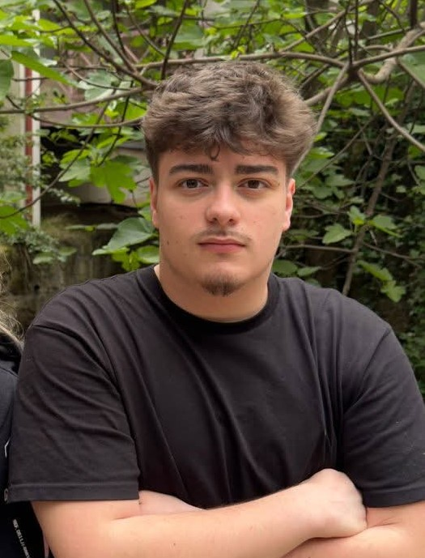
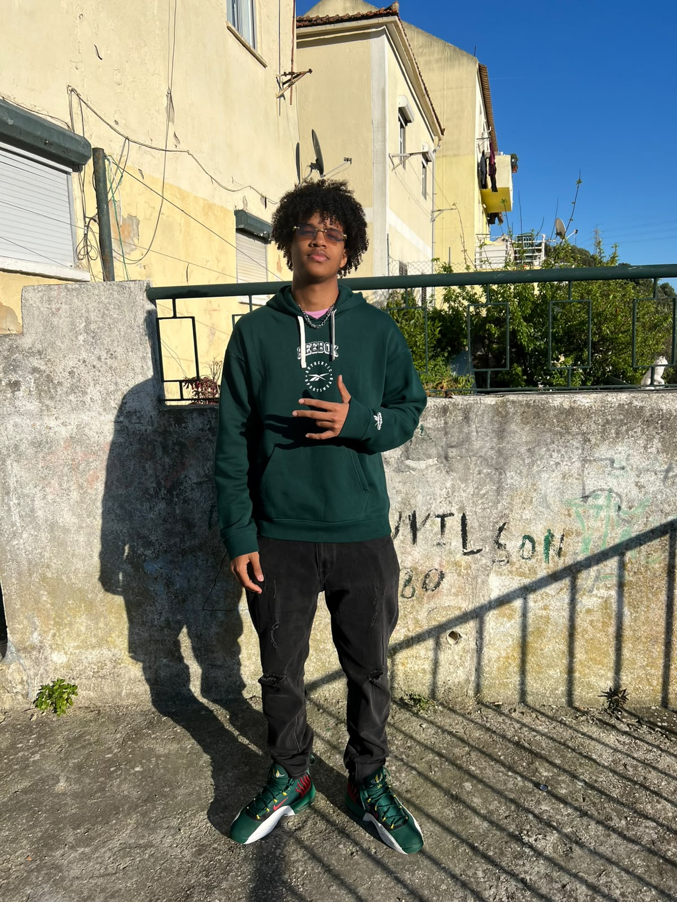

18 anos | Covilhã, Portugal | Aluno Nº 55826
Informática Web, Móvel e na Nuvem (1º Ano) - UBI
Olá, sou o Santiago. Em conjunto com o Luigi, fui responsável pelo design e desenvolvimento deste website para a unidade curricular de Composição de Interfaces Multiplataforma. Foquei-me especialmente na criação do protótipo no Figma, garantindo uma navegação intuitiva e uma estética "fine dining", e colaborei ativamente na implementação do código para que a versão final em HTML e CSS fosse fiel ao design original e cumprisse todos os requisitos de responsividade e acessibilidade.

18 anos | Praia, Cabo Verde | Aluno Nº 57226
Informática Web, Móvel e na Nuvem (1º Ano) - UBI
Olá, sou o Luigi. Sou apaixonado por tecnologia e focado em criar soluções digitais inovadoras. Neste projeto, trabalhei em conjunto com o Santiago para desenvolver toda a estrutura funcional do website. A minha dedicação centrou-se em aplicar os conhecimentos adquiridos na unidade curricular para estruturar as páginas, criar grelhas responsivas e assegurar que a experiência de utilização fosse premium em qualquer dispositivo, desde a página inicial até ao formulário de reservas.